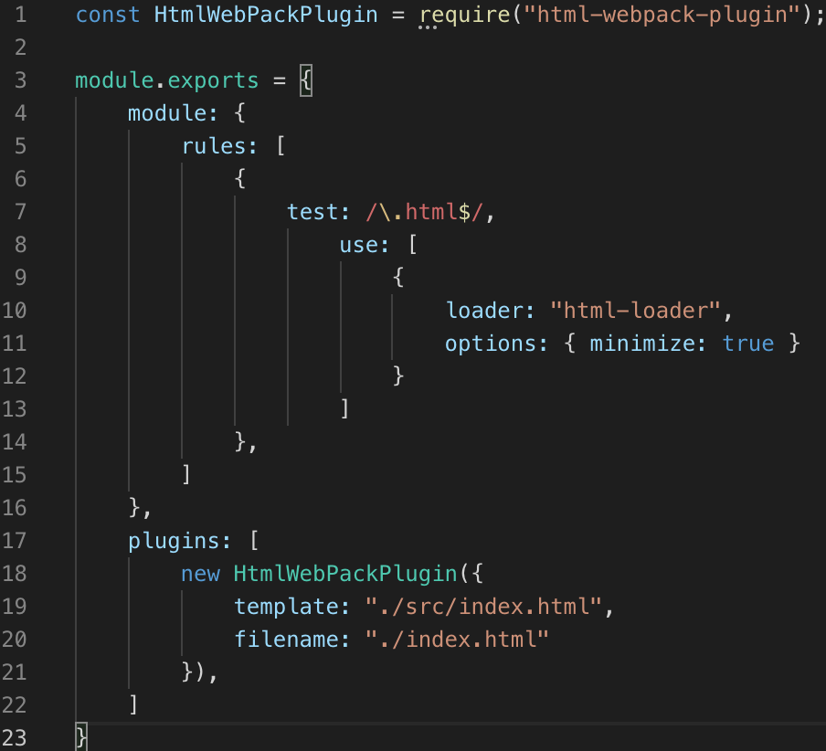
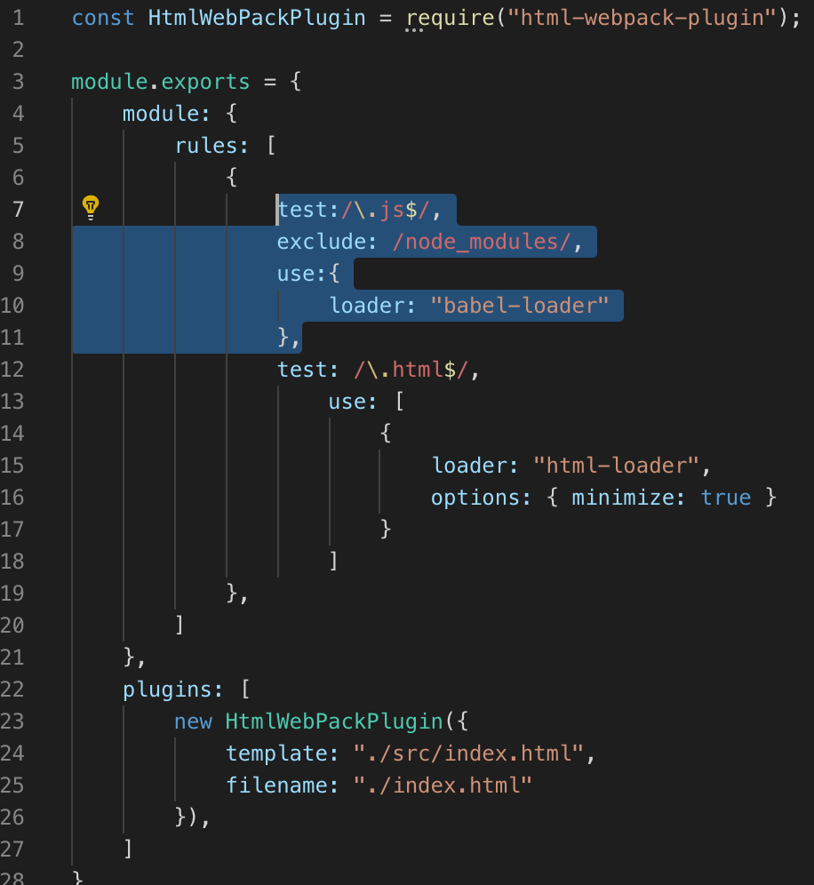
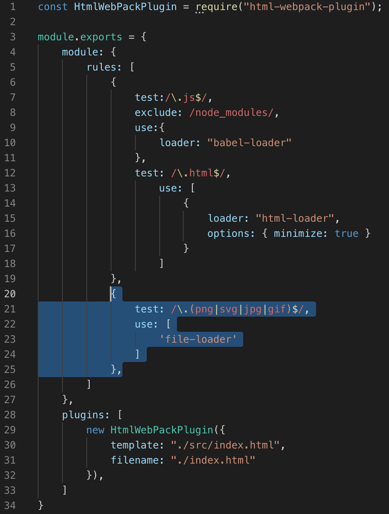
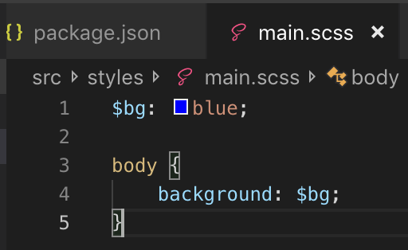
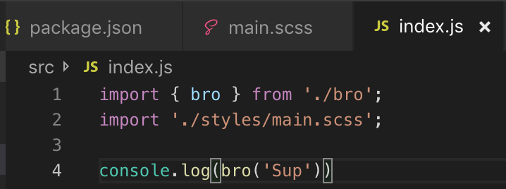
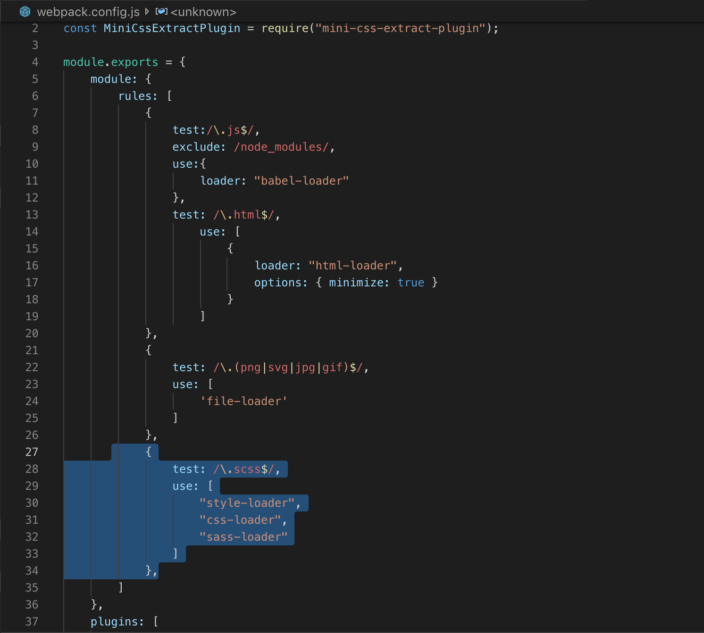
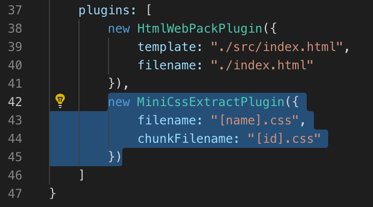

Last Updated: 1-08-2019
For this example I will name my directory webpacktut.
$ mkdir webpacktut
$ cd webpacktut
Next execute the following commands.
$ npm init -y (This creates a package.json file)
$ npm i -D webpack
$ npm i -D webpack-cli
Open up the directory on a text editor. (Sublime or VS Code)
$ subl . (For Sublime)
$ code . (For VS Code)
Inside the Scripts, change the "test" to build and inside of it "webpack" like so.
"build": "webpack"
Inside the bro.js type the following.
const bro = (greeting) => {
return `${greeting}, bro`
}
export { bro }
Next, open the index.js file and import bro.js like so.
import { bro } from './bro';
console.log(bro('Dude'))
In Terminal, execute the following commands.
$ npm i -D html-webpack-plugin html-loader
Inside the index.html file create a scaffolding. (VSCode shortcut !enter)
<!DOCTYPE html>
<html lang="en">
<head>
<meta charset="UTF-8">
<meta name="viewport" content="width=device-width, initial-scale=1.0">
<meta http-equiv="X-UA-Compatible" content="ie=edge">
<title>Document</title>
</head>
<body>
</body>
</html>
Create a webpack.config.js. (As Shown Below)

Type the following command to install the package.
$ npm i -D webpack-dev-server
Then go to the package.json file and add to the Scripts like so.
"scripts": {
"build": "webpack",
"start:dev": "webpack-dev-server"
},
Then we can start the server by executing the following command.
$ npm run start:dev
Now you can view the project via localhost:8080, and in the console you will see "Dude, bro"
And Live Reloading is enabled.
$ npm i -D @babel/core babel-loader @babel/preset-env
After successfully installing babel, edit the Webpack.Config.js
Add the Following code into the rules.
test:/\.js$/,
exclude: /node_modules/,
Use:{
loader: "babel-loader"
},

Now Babel Transpiling is ready, for future Javascript and it will be compiled down so other browsers can understand it.
$ npm i -D file-loader
After successful install, edit the Webpack.config.js
Add the following code to rules.
{
test: /\.(png|svg|jpg|gif)$/,
use: [
'file-loader'
]
},

Then create an images folder inside of source, and put an image of your choice inside the folder (Try to pick a small or medium sized picture).
In the index.html file put img src in the body.
<img src="images/Beach.jpg">
Now when you do npm run build, and the asset will load (as you can see in the dist folder).
$ npm i -D node-sass style-loader css-loader sass-loader mini-css-extract-plugin
Next we need to create a Styles folder in the src folder.
Then create a main.scss file inside the Styles folder.
Create a simple background variable in the main.scss file.

Next, we go to our index.js file and import the main.scss file.

Now we have to add some rules in our webpack.config.js file.
Add a rule and the new plugin we installed.
Rule below.
{
test: /\.scss$/,
use: [
"Style-loader",
"Css-loader",
"Sass-loader"
]
},
Plugin below. (First one at the top of the file, second below plugins)
const MiniCssExtractPlugin = require("mini-css-extract-plugin");

new MiniCssExtractPlugin({
filename: "[name].css",
chunkFilename: "[id].css"
})

Proceed by executing this code:
$ npm run build
$ npm run start:dev
After doing so you can start the server and check localhost for any errors. The background should be blue and the image that you inserted should pop up.
There you have it, basic tutorial of webpack completed.